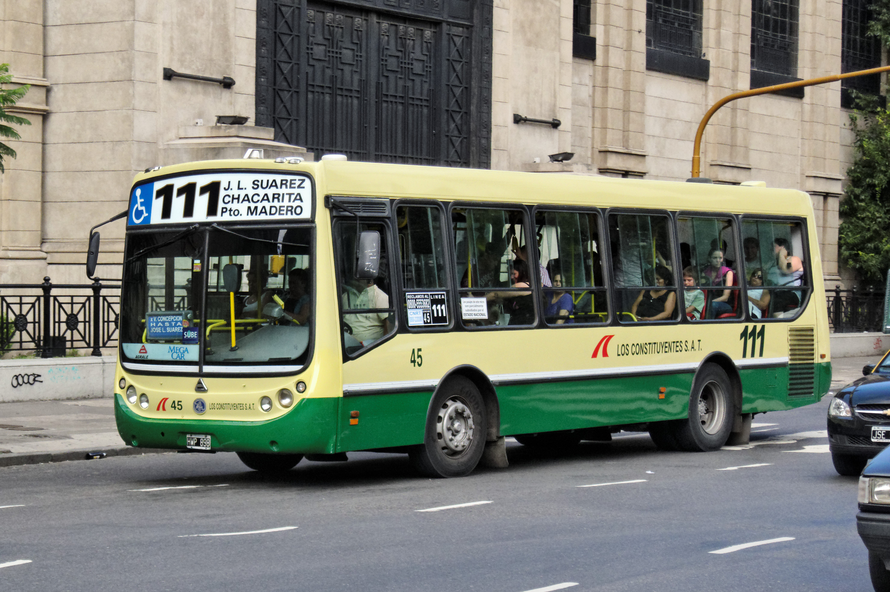
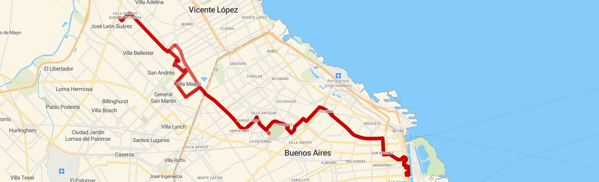

Información actualizada sobre recorridos, horarios, frecuencia, accesibilidad y servicio de la Línea 111 en la Ciudad de Buenos Aires.

La Línea 111 conecta múltiples barrios de la Ciudad Autónoma de Buenos Aires, atravesando zonas residenciales, comerciales y educativas con un servicio constante durante todo el día.
El recorrido une puntos clave de circulación urbana permitiendo conexión con estaciones de tren, subte y otras líneas de colectivo.
La Línea 111 opera de forma continua todos los días del año, incluyendo feriados y fines de semana. No hay corte de servicio nocturno.
Mayor frecuencia entre las 07:00 y las 10:00 hs y entre las 16:00 y las 20:00 hs de lunes a viernes, con unidades adicionales de refuerzo.
El recorrido completo de cabecera a cabecera tiene una duración aproximada de 130 minutos en condiciones normales de tránsito.
No se acepta efectivo a bordo. El pago se realiza exclusivamente con tarjeta SUBE. Se aplican descuentos según normativa CNRT vigente.
Las unidades cuentan con espacios prioritarios, acceso adaptado y señalización para personas con movilidad reducida.
La frecuencia aproximada varía entre 6 y 12 minutos dependiendo del horario, tránsito y demanda.
